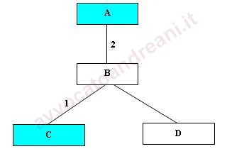
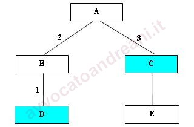
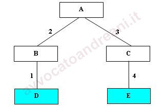

La parentela
La parentela è il vincolo che unisce coloro che discendono da una stessa persona o, come afferma il codice civile (l’art. 74 c.c.) dallo stesso stipite (detto anche capostipite).
Si distinguono due diverse tipologie di parentela:
Parentela diretta (o in linea retta) unisce le persone che hanno una discendenza diretta (ad es. padre e figlio, nonno e nipote etc.);
Parentela indiretta (o in linea collaterale) unisce le persone che, pur avendo un uno stipite comune, non discendono l’una dall’altra (ad es. fratelli, zii, cugini etc.).
Il rapporto di parentela ha conservato la sua importanza nella materia della successione ereditaria: infatti, l’art. 565 c.c. stabilisce che, in mancanza di testamento, l’eredità si devolve per
legge ai parenti del defunto secondo un certo ordine, con il limite, sancito dall’l’art. 572 c.c. che la successione non può aver luogo tra i parenti oltre il sesto grado (es: i figli di cugini sono parenti di sesto grado).
Per questi motivi ci troviamo spesso di fronte alla necessità di calcolare il c.d. "grado di parentela" ovvero la "distanza" in termini di discendenza tra gli appartenenti alla stessa famiglia.
E’ piuttosto frequente trovare norme o clausole contrattuali che fanno riferimento al grado di parentela (ad es: nella determinazione delle quote ereditarie) e a volte il suo calcolo può risultare tutt’altro che semplice.
L’albero genealogico
Per il calcolo del grado di parentela si rivela particolarmente utile l’albero genealogico che, come noto, è una rappresentazione grafica delle relazioni e delle discendenze tra le persone.
Gli "stipiti" sono rappresentati dai nodi dell’albero genealogico, le linee rette orizzontali indicano una relazione tra "stipiti" (ad es: matrimonio, convivenza etc.) da cui scaturisce una discendenza diretta, mentre le linee verticali o oblique rappresentano la relazione di discendenza.
Gli elementi terminali dell’albero genealogico (detti anche foglie) rappresentano i discendenti che non hanno avuto figli; ciascuno di essi può diventare a sua volta uno "stipite" nel momento stesso in cui dà origine ad almeno un discendente diretto.
Il primo stipite dell’albero genealogico è comunemente detto capostipite.
Determinazione del grado di parentela
Per determinare il grado di parentela tra due persone si individua la loro posizione all’interno dell’albero genealogico, si determina il cammino più breve che le unisce (cammino minimo) e si contano le linee di congiunzione appartenenti al cammino minimo.
NOTA: per semplicità negli esempi che seguono indicheremo in ciascun nodo il solo stipite di genere maschile.
Es: 1) padre "A" e figlio "B": parentela in linea retta di primo grado.
| A |
|---|
| | |
| B |
Es: 2) fratelli "B" e "C": parentela in linea collaterale di secondo grado.

NOTA: i due fratelli "B" e "C" hanno uno stipite in comune "A" ma non discendono l’uno dall’altro e quindi la parentela è "indiretta" o in "linea collaterale".
Es: 3) nipote "C" e nonno "A": parentela in linea retta di secondo grado.
NOTA: qui, come nell’esempio 1, siamo di fronte ad una parentela in linea retta perché "C" discende da "A" anche se non direttamente.
Es: 4) nipote "D" e zio "C": parentela in linea collaterale di terzo grado.
Es: 5) cugini "D" ed "E": parentela in linea collaterale di quarto grado.
Un altro modo per calcolare il grado di parentela consiste nel contare le persone che appartengono al cammino minimo escludendo il capostipite (che equivale a sottrarre sempre 1).
Con riferimento all’esempio n. 2 abbiamo tre persone: "B", suo padre "A", suo fratello "C" e quindi il grado di parentela tra "B" e "C" è: 3 - 1 = 2.
Nell’esempio 5 abbiamo cinque persone: "D", suo padre "B", suo nonno "A", suo zio "C", e suo cugino "E" e pertanto il grado di parentela sarà 5 - 1 = 4.
Come detto, negli esempi precedenti abbiamo indicato per brevità il solo stipite di genere maschile (nonno, padre, zio etc.) ma, naturalmente, i gradi di parentela sono esattamente gli stessi anche per gli stipiti di genere femminile (nonna, madre, zia etc.).
Il rapporto di coniugio
Tra marito e moglie non esiste un vero e proprio rapporto di parentela ma in questo caso si parla di rapporto di coniugio.
Tale rapporto è disciplinato dagli artt. 143 e segg. c.c., ove sono elencati i diritti e i doveri dei coniugi
Il rapporto di coniugio non è condizione indispensabile per la creazione di vincoli di parentela in quanto due persone possono avere discendenti senza essere coniugate con rito religioso o civile.
Il rapporto di coniugio inoltre può essere interrotto in qualunque momento (divorzio e/o annullamento del matrimonio) senza che questo vada a modificare in alcun modo l’albero genealogico e le relazioni di parentela preesistenti.
Un caso particolare: l’adozione
Con l’adozione il minore acquista lo status di figlio legittimo degli adottanti, che ne diventato i genitori a tutti gli effetti, con la conseguenza che la nuova famiglia diviene l’unica famiglia del minore. Egli pertanto da un lato rescinde ogni vincolo con la famiglia di origine, nei cui confronti non ha più alcun diritto o obbligo, e dall’altro crea un legame di parentela con i parenti dei nuovi genitori.